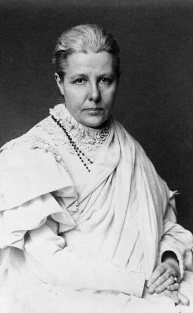

One of the most iconic men that ever took birth and still continues to survive in the lessons of passive-resistance and non-violence that he selflessly gave to the world, hence making it a much better place. He gave up everything, his law career; his house and wealthy family to fight for justice and for the betterment of his people who were being treated as third class citizens by the colonial British. Even in the harshest of conditions, he never gave up his morals and rules, no matter what the cost of it. Mahatma Gandhi has right fully been given the title of the father of the nation as India truly owes its independence as a republic and a democracy to this Short, thin brown man who needed a stick while walking to support him but who was strong enough to take the responsibility of an entire country and usher it to the world of sovereignty.
Bhagat Singh is rightly considered to be the most influential revolutionary during the Independence movement for India. When we think of all the martyrs who gave away their life for the pride and honor of their motherland, we often remember “Shaheed” Bhagat Singh. From seeking revenge on Lala Lajpat Rai’s death and 1929 assembly bomb throwing incident to the 116 days fast in jail, Singh was not a believer in Gandhian ideology of Satyagraha and non-violence. At the age of 23 Singh was sentenced to death along with Rajguru and Sukhdev while all three of them kissed the rope, put it around their neck themselves and died for the sake of Bharat Mata. Singh’s death proved to be an awakening for the youth of the nation which got committed to make India the Independent India.
When it comes to remembering the powerful souls who gave away their life to see India getting independence Chandra Shekhar Azad is a sure name. One of the greatest freedom fighters and a revolutionary, Chandra Shekhar Azad was committed to free India by any means. First participating in Gandhi’s non cooperation movement, Azad later implemented the use of arms for the struggle of freedom. The unforgettable contributions by Azad include establishment of Hindustan Socialist Republic Association, mentoring and encouraging other young revolutionaries like Bhagat Singh and Sukhdev and establishment of Jhansi camp. Chandra Shekhar Azad loathed the British rule to such extent that he ended his life by shooting himself because he preferred dying with pride rather than by the hands of British police.
Another great freedom fighter was Subhash Chandra Bose who was the founder of Indian National Army, more popularly known as “Azad Hind Fauj”. Subhash Chandra Bose was a believer in Swami Vivekananda’s teachings and had a patriotic zeal even as a student. During his days in Calcutta University, he had beat one of his British professors who made a racist remark over Indian students. Bose was a rebel and he joined the Indian National Congress and later became its president. “Tum mujhe khoon do, main tumhe azadi dunga” (You give me blood, and I promise you freedom). These are the ever famous words said by Netaji in his speech which motivated a large number of Indians to take up intense and serious actions towards freeing their motherland from colonial powers.
The Indian struggle for freedom wasn’t just a man’s affair but thousands of women too fought with bravery to bring back this nation’s pride and Rani Lakshmi Bai’s name shines in the list. “Khoob ladi mardani wo to Jhansi wali Rani thi” (She fought a man’s war, she was Rani Lakshmi Bai of Jhansi). These words wonderfully talk about the bravery with which she fought the British army to save her reign over the Princely state of Jhansi. Rani Lakshmi Bai led her troop, the largest women army till date, and fought the battle against the British.
A prominent leader of Indian National Congress, Sardar vallabhai Patel played a leading role in India’s struggle for independence. Vallabhai Patel took part in Satyagraha and while Mahatma Gandhi was in prison he led the Satyagraha in Nagpur. Sardar Vallabhai Patel also actively participated in Civil Disobedience Movement and Quit India Movement.
The first Prime Minister of independent India Jawahar Lal Nehru hasn’t gained much recognition as a freedom fighter which he deserves. Born into a political family Jawahar Lal Nehru spent most of his educational years in England but then returned to India as the struggle for freedom had been on his mind for a long time. Nehru was a staunch Gandhian. He believed in Satyagraha and was keen on adapting the non-violent methods for the freedom struggle. Jawahar Lal Nehru actively took part in the non-cooperation movement in 1920 and then the Civil Disobedience Movement. The last days of freedom struggle saw vigorous campaigns by Nehru and ultimately he took the responsibility as a Prime Minister of India to build a new nation with a successful economy.
A soldier in the army of British East India Company, Mangal Pandey was one of the first freedom fighters of India. Pandey was a Sepoy who rose against the British rule during the Great Revolt of 1857. Mangal Pandey attacked his British officers, revolted against the greased cartridges being used by the British forces and played a pivotal role in the Barrack pore Unrest. Mangal Pandey fought with diligence for the freedom of this country and due to his rebelliousness he was hanged till death in 1857.
Annie Besant was a British Activist who believed in Indian Self-rule. During the First World War, she campaigned for the Freedom of India and helped in the formation of the ‘Home Rule League’. She was elected as the President of the Congress and got extremely involved in the Indian Politics. She was also a Woman’s Rights Activist. SHe kept campaigning and fighting against her own country for the establishment of democracy in India until her death in 1933.
The last Mughal Emperor of India Bahadur Shah Zafar was a great freedom fighter largely involved in the Indian Rebeliion of 1857. He was the leader of the Sepoys and led his army for the Sepoy mutiny against the East India Company. Seeing his rebellious activities Bahadur Shah Zafar was exiled to Rangoon which is now in Bangladesh.